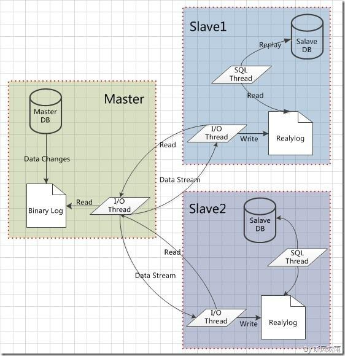

前言
Percona XtraBackup可以说是一个相对完美的免费开源数据备份工具，支持在线无锁表同步复制和可并行高效率的安全备份恢复机制相比mysqldump来说确实让人眼前一亮，与MySQL Enterprise Backup(InnoDB Hot Backup)的功能对比可以参考扩展阅读。当然我们在实际运维过程中都应针对不同的业务需求分析和选择合适的备份恢复方案，这篇文章就是针对MySQL多实例且一个实例对应多个database的情况，实现MySQL在线不停机不锁表的主从同步，日后再继续更新分享基于XtraBackup的其它实用技能。
XtraBackup是目前首选的备份方案之一
更新历史
2015年08月07日 - 初稿
阅读原文 - http://wsgzao.github.io/post/xtrabackup/
扩展阅读
Percona XtraBackup - https://www.percona.com/software/mysql-database/percona-xtrabackup
MySQL 5.6 Reference Manual :: 17 Replication - http://dev.mysql.com/doc/refman/5.6/en/replication.html
基于Xtrabackup的物理备份解决方案预研 - http://tencentdba.com/blog/pre-research-on-physical-backup-using-xtrabakcup/
xtrabackup 详解 - http://www.cnblogs.com/gomysql/p/3650645.html
LTMP索引 - http://wsgzao.github.io/index/#LTMP
原理
MySQL主从同步原理
MySQL主从同步是在MySQL主从复制(Master-Slave Replication)基础上实现的，通过设置在Master MySQL上的binlog(使其处于打开状态)，Slave MySQL上通过一个I/O线程从Master MySQL上读取binlog，然后传输到Slave MySQL的中继日志中，然后Slave MySQL的SQL线程从中继日志中读取中继日志，然后应用到Slave MySQL的数据库中。这样实现了主从数据同步功能。
XtraBackup备份原理
innobackupex在后台线程不断追踪InnoDB的日志文件，然后复制InnoDB的数据文件。数据文件复制完成之后，日志的复制线程也会结束。这样就得到了不在同一时间点的数据副本和开始备份以后的事务日志。完成上面的步骤之后，就可以使用InnoDB崩溃恢复代码执行事务日志（redo log），以达到数据的一致性。
备份分为两个过程：
- backup，备份阶段，追踪事务日志和复制数据文件（物理备份）。
- preparing，重放事务日志，使所有的数据处于同一个时间点，达到一致性状态。
XtraBackup的优点
- 可以快速可靠的完成数据备份（复制数据文件和追踪事务日志）
- 数据备份过程中不会中断事务的处理（热备份）
- 节约磁盘空间和网络带宽
- 自动完成备份鉴定
- 因更快的恢复时间而提高在线时间
配置
准备工作
MySQL步骤和my.cnf配置参考LTMP - http://wsgzao.github.io/post/ltmp/
1
2
3
4
5
6
7
8
9
10
11
12
13
14
15
16
17
18
19
20
21
22
23
24
25
26
27
28
29
30
31
32
33
34
35
36
37
38
39
40
41
42
43
44
45
46
47
48
49
50
51
52
|
#原有主数据库版本
mysql -V
mysql Ver 14.14 Distrib 5.5.31, for Linux (x86_64) using readline 5.1
#迁移从数据库版本
mysql -V
mysql Ver 14.14 Distrib 5.6.25, for linux-glibc2.5 (x86_64) using EditLine wrapper
#检查数据库引擎
show engines;
+--------------------+---------+----------------------------------------------------------------+--------------+------+------------+
| Engine | Support | Comment | Transactions | XA | Savepoints |
+--------------------+---------+----------------------------------------------------------------+--------------+------+------------+
| MRG_MYISAM | YES | Collection of identical MyISAM tables | NO | NO | NO |
| CSV | YES | CSV storage engine | NO | NO | NO |
| MyISAM | YES | MyISAM storage engine | NO | NO | NO |
| BLACKHOLE | YES | /dev/null storage engine (anything you write to it disappears) | NO | NO | NO |
| MEMORY | YES | Hash based, stored in memory, useful for temporary tables | NO | NO | NO |
| InnoDB | DEFAULT | Supports transactions, row-level locking, and foreign keys | YES | YES | YES |
| ARCHIVE | YES | Archive storage engine | NO | NO | NO |
| PERFORMANCE_SCHEMA | YES | Performance Schema | NO | NO | NO |
| FEDERATED | NO | Federated MySQL storage engine | NULL | NULL | NULL |
+--------------------+---------+----------------------------------------------------------------+--------------+------+------------+
#主从数据库同步注意点
[mysqld]
#主从之间的id不能相同
server-id
#启用二进制日志
log-bin
#一般在从库开启（可选）
read_only
#推荐使用InnoDB并做好相关配置
#检查主从数据库状态
mysql -S /tmp/mysql.sock -e "show global variables like 'server_id';"
+---------------+-------+
| Variable_name | Value |
+---------------+-------+
| server_id | 1 |
+---------------+-------+
mysql -S /tmp/mysql.sock -e "show global variables like 'log_bin';"
+---------------+-------+
| Variable_name | Value |
+---------------+-------+
| log_bin | ON |
+---------------+-------+
|
安装percona-xtrabackup
一般推荐rpm安装 - https://www.percona.com/downloads/XtraBackup/LATEST/
1
2
3
| yum -y install perl perl-devel libaio libaio-devel perl-Time-HiRes perl-DBD-MySQL
#rpm -ivh percona-xtrabackup-2.2.12-1.el6.x86_64.rpm
rpm -Uvh percona-xtrabackup-2.2.12-1.el6.x86_64.rpm
|
备份和恢复
通常一般都直接使用innobackupex，因为它能同时备份InnoDB和MyISAM引擎的表
重点关注Slave_IO_Running和Slave_SQL_Runningd的状态是否为YES
1
2
3
4
5
6
7
8
9
10
11
12
13
14
15
16
17
18
19
20
21
22
23
24
25
26
27
28
29
30
31
32
33
34
35
36
37
38
39
40
41
42
43
44
45
46
47
48
49
50
51
52
53
54
|
#备份
innobackupex --socket=/usr/local/var/mysql2/mysql2.sock --user=root --password --defaults-file=/etc/mysqld_multi.cnf --parallel=4 --database=passport /tmp/backup
#保持事务一致性
innobackupex --socket=/usr/local/var/mysql2/mysql2.sock --user=root --password --defaults-file=/etc/mysqld_multi.cnf --database=passport --apply-log /tmp/backup/2015-08-05_16-08-14
#传输
scp -r /tmp/backup/2015-08-05_16-08-14 10.10.16.24:/tmp/backup/
#恢复
innobackupex --socket=/tmp/mysql.sock --user=root --password --defaults-file=/app/local/mysql/my.cnf --copy-back /tmp/backup/2015-08-05_16-08-14/
#还原权限
chown -R mysql:mysql /app/data/mysql/data
service mysqld start
/app/local/mysql/scripts/mysql_install_db --basedir=/app/local/mysql --datadir=/app/data/mysql/data --no-defaults --skip-name-resolve --user=mysql
#主库授权同步帐号
SELECT DISTINCT CONCAT('User: ''',user,'''@''',host,''';') AS query FROM mysql.user;
GRANT REPLICATION SLAVE ON *.* TO 'slave_passport'@'10.10.16.24' IDENTIFIED BY 'slave_passport';
FLUSH PRIVILEGES;
#从库开启同步
cat /tmp/backup/2015-08-05_16-08-14/xtrabackup_binlog_info
mysql-bin.002599 804497686
CHANGE MASTER TO
MASTER_HOST='10.10.16.51',
MASTER_USER='slave_passport',
MASTER_PASSWORD='slave_passport',
MASTER_PORT=3307,
MASTER_LOG_FILE='mysql-bin.002599',
MASTER_LOG_POS=804497686;
#开启主从同步
start slave;
#查看从库状态
show slave status\ G
#从库的检查参数
Slave_IO_Running=Yes
Slave_SQL_Running=Yes
#主库的检查参数
show master status \G
+------------------+-----------+--------------+------------------+
| File | Position | Binlog_Do_DB | Binlog_Ignore_DB |
+------------------+-----------+--------------+------------------+
| mysql-bin.002600 | 454769337 | | |
+------------------+-----------+--------------+------------------+
1 row in set (0.00 sec)
show processlist;
Master has sent all binlog to slave; waiting for binlog to be updated
|
MySQL主从切换
切换前断开主库访问连接观察进程状态，无写操作后再停止从库IO_THREAD进行切换
1
2
3
4
5
6
7
8
9
10
11
12
13
14
15
16
17
18
19
20
21
22
23
24
25
26
27
28
29
30
31
32
33
34
35
36
37
38
39
40
41
42
43
|
#查看主库状态
show processlist;
Master has sent all binlog to slave; waiting for binlog to be updated
show master status \G
#从库停止 IO_THREAD 线程
stop slave IO_THREAD;
show processlist;
Slave has read all relay log; waiting for the slave I/O thread to update it
show slave status \G
#从库切换为主库
stop slave;
reset master;
reset slave all;
show master status \G
#激活帐户
SELECT DISTINCT CONCAT('User: ''',user,'''@''',host,''';') AS query FROM mysql.user;
GRANT REPLICATION SLAVE ON *.* TO 'slave_passport'@'10.10.16.51' IDENTIFIED BY 'slave_passport';
FLUSH PRIVILEGES;
#切换原有主库为从库
reset master;
reset slave all;
CHANGE MASTER TO
MASTER_HOST='10.10.16.24',
MASTER_USER='slave_passport',
MASTER_PASSWORD='slave_passport',
MASTER_PORT=3306,
MASTER_LOG_FILE='mysql-bin.000001',
MASTER_LOG_POS=804497686;
#检查主库
SHOW PROCESSLIST;
show master status \G
#启动从库
SHOW PROCESSLIST;
start slave;
show slave status \G
|
常见问题
Slave_SQL_Running:No
1
2
3
4
| #一般是事务回滚造成的
stop slave;
set GLOBAL SQL_SLAVE_SKIP_COUNTER=1;
start slave;
|
{kind=link}